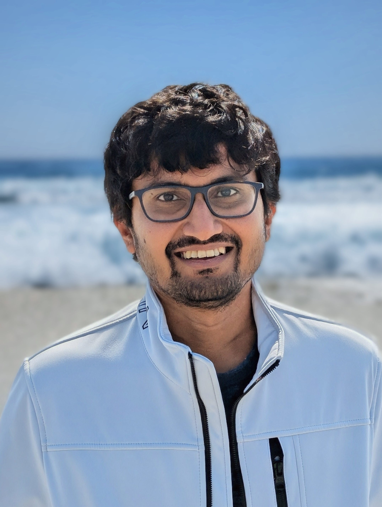
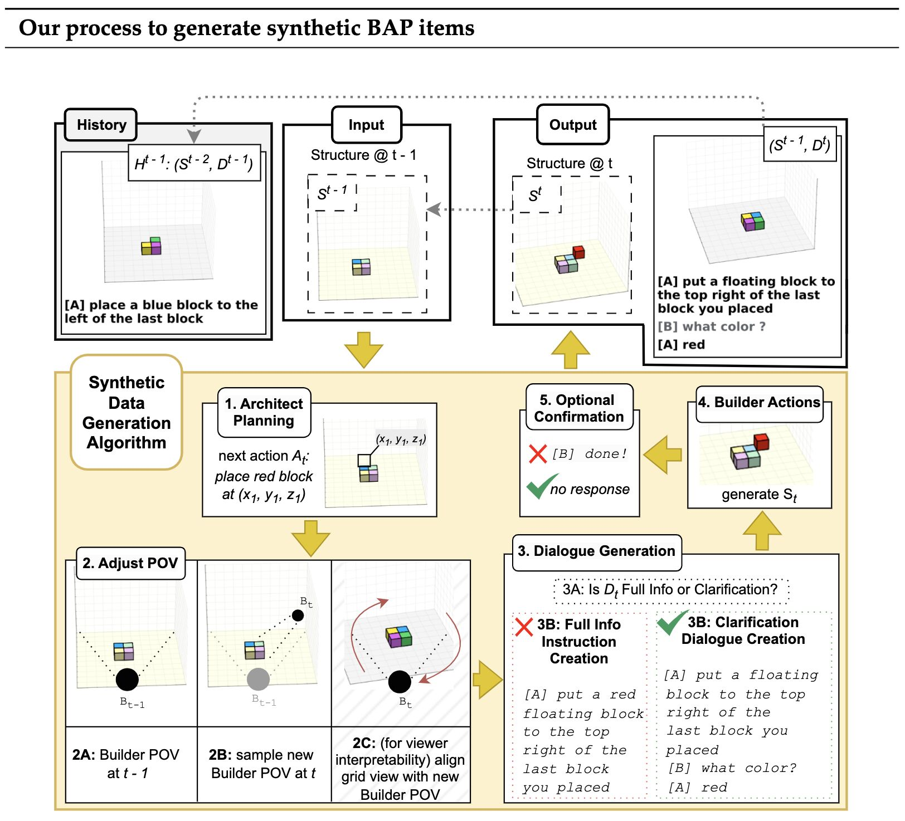
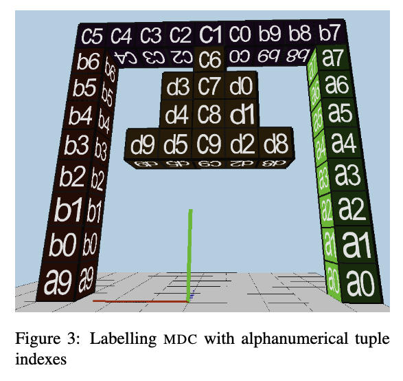
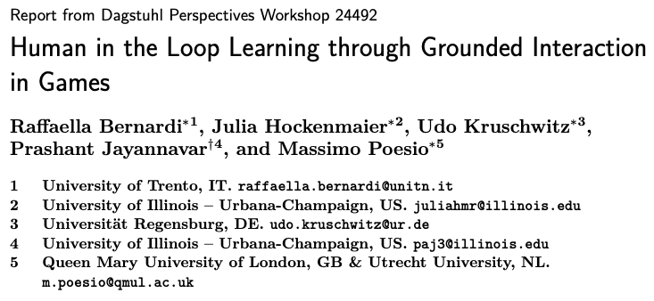
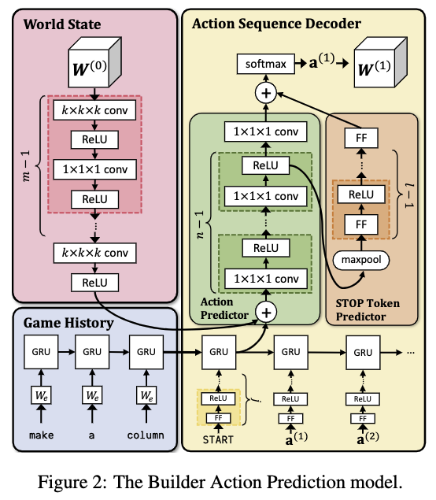
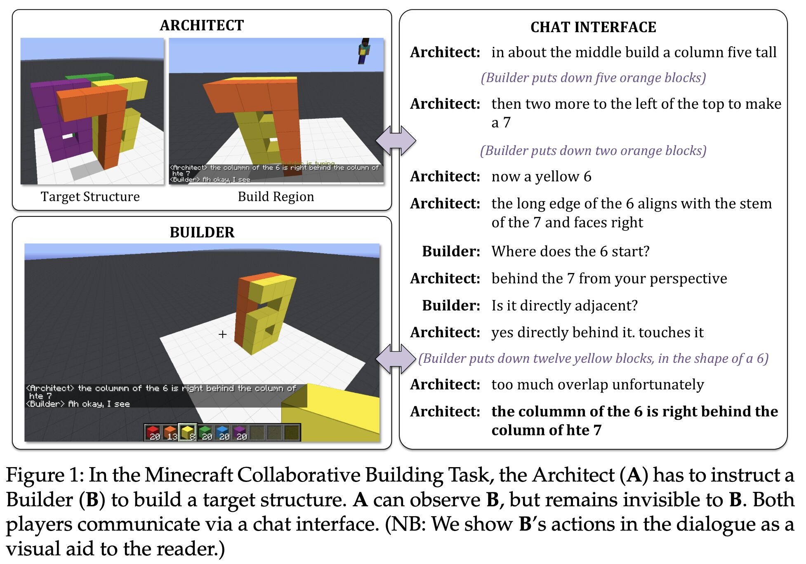
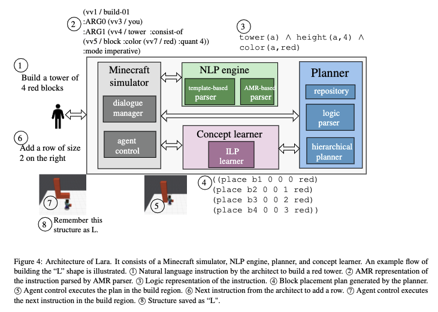
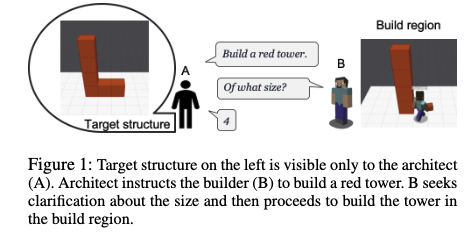
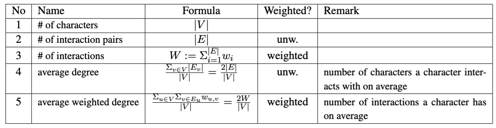

Prashant Jayannavar
I am a graduating CS PhD student at UIUC, advised by Prof. Julia Hockenmaier, specializing in Natural Language Processing (NLP). My research centers on instruction following agents in embodied dialogue, with a focus on spatial intelligence and low-data regimes. My work advances this field by developing a novel research ecosystem — spanning real and synthetic datasets, benchmarks, efficient learning methods, and LLMs — using simulated multimodal environments such as Minecraft.
Previously, I spent 2.5 years as a Data Scientist at the AI startup x.ai (acquired by Bizzabo), building a task-oriented dialogue agent for autonomous meeting scheduling.
News
- Feb 2026 Organizing a special session on Evaluating and Advancing Spatial Intelligence through Games at IEEE Conference on Games (CoG) 2026, with Alessandro Suglia, Sina Zarrieß, and Massimo Poesio. [LinkedIn · X]
- Jan 2026 Successfully defended my PhD!
- Dec 2025 BAP v2 accepted as a long paper in the Computational Linguistics journal. [LinkedIn · X]
- Dec 2024 Invited participant at Dagstuhl Perspectives Workshop 24492: Human in the Loop Learning through Grounded Interaction in Games, Schloss Dagstuhl, Germany (Dec 1–6, 2024).
Publications
J = Journal · C = Conference · W = Workshop · D = Demo · R = Report
* denotes equal contribution
Selected Papers





Other Papers



Curriculum Vitae
A more detailed summary of my background and experience.
Download CV (PDF)